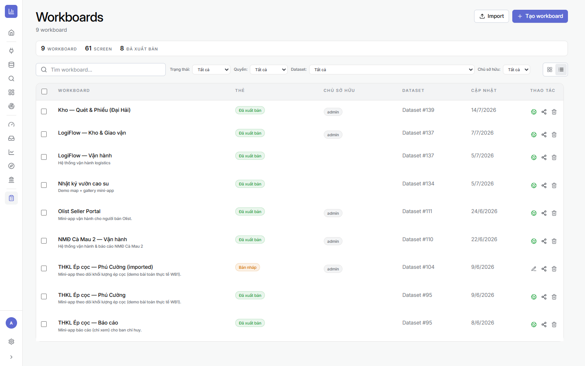
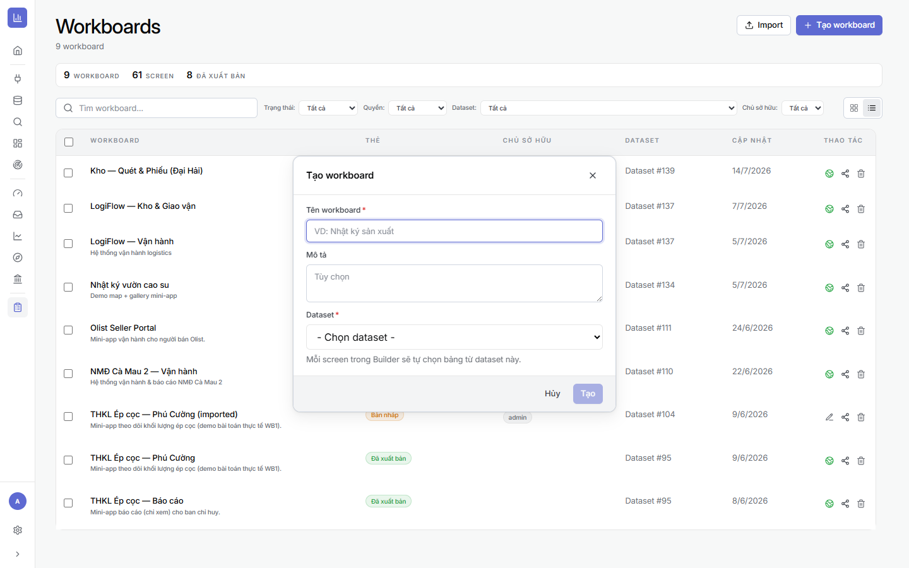

2.1Màn hình Workboards
Là gì: nơi quản lý mọi Mini App. Mỗi dòng là một Workboard với trạng thái (Bản nháp / Đã xuất bản), Dataset nền, chủ sở hữu.
⚙ Cách mở
- Vào module Workboard (biểu tượng bảng kẹp ở thanh trái).
- Trên cùng: Tạo workboard và Import (nhập bản export sẵn); có bộ lọc theo trạng thái/quyền/dataset.

2.2Tạo Workboard — chọn Dataset nền
Là gì: Mini App là dataset-first — bạn phải chọn Dataset khi tạo. Mỗi màn hình sau này sẽ chọn một bảng từ dataset này.
⚙ Cách làm
- Bấm + Tạo workboard.
- Nhập Tên workboard (bắt buộc) + Mô tả.
- Chọn Dataset — dùng Dataset Google Sheets đã chuẩn bị ở Chương 1.
- Bấm Tạo → mở thẳng vào Builder.

2.3Builder — Workspace, screen & xem trước
Là gì: màn dựng app. Bên trái cấu hình, bên phải LIVE PREVIEW cập nhật ngay như người dùng thấy.
- BOUND DATASET — dataset nền + số bảng khả dụng; nút App settings (thương hiệu/giao diện app).
- WORKSPACES — nhóm các màn hình (ví dụ “Kho”, “Báo cáo”). Có thể có nhiều Workspace.
- Danh sách screen — mỗi screen gắn 1 bảng, có trạng thái Configured / Needs fields.
- Thanh trên: tab Builder / Users / Preview / Webhook + Chia sẻ + Export + trạng thái xuất bản.

Workspace để làm gì: gom màn hình theo vai trò/nghiệp vụ. Khi chia sẻ (Chương 5) có thể bật/tắt từng Workspace hoặc từng screen cho người xem.
2.4Checklist
- ✅ Đã tạo Workboard và gắn đúng Dataset (Google Sheets).
- ✅ Hiểu bố cục Builder: Workspace → screen → bảng.
- ✅ Biết chỗ mở App settings, tab Users, Chia sẻ.
➡️ Tiếp theo: Chương 3 · Dựng màn hình — thêm & cấu hình Form / Table / Document / Dashboard.
🔗 Liên quan